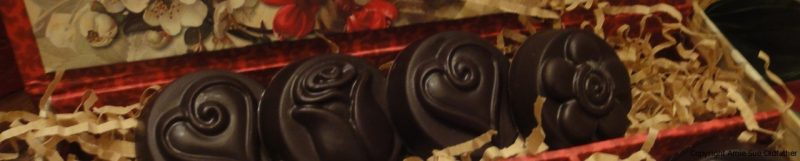

Mint Chocolate Candies

~ raw, vegan, gluten-free, nut-free ~
A few years ago my husband and I dabbled in the art of making chocolates. We took a three-month chocolatier course that basically just gave us a taste of what a true art form making chocolates is all about.
Even though we were eating a high raw diet at the time (and now) we wanted to understand everything there was to know about chocolate. Having a bit of that knowledge helped me feel a bit more comfortable in my kitchen yesterday.
But I will say that there are some major differences when it comes to dealing with raw chocolates. With raw, you don’t dabble with the whole tempering process so coming up with hardening chocolate that retains a bit of a shine is a challenge.
I tried three different recipes until I finally found this one which can be found in the dessert book from Cafe Gratitude. The other two recipes that I tried didn’t meet the criteria that I was searching for but they didn’t go to waste. I popped them in the freezer and will use them later in cookie and cake recipes, where the texture won’t be noticed. I created the recipe for the minty filling in these candies, which I must say came out pretty darn good. With Valentine’s just around the corner, these would make wonderful gifts that can be individualized to your sweetheart’s liking!

Ingredients:
Minty center:
- 3 cups coconut flakes, unsweetened
- 3 Tbsp maple syrup
- 1/4 cup raw coconut butter
- 1 Tbsp raw cold-pressed coconut oil
- 1/2 avocado, ripe
- 2 Tbsp water
- 3 tsp mint extract
Chocolate coating:
- 1 cup raw cocoa butter
- 1 cup raw cacao powder
- 1/3 cup maple syrup
- 1 tsp powdered lecithin (helps with smoothness, optional)
- seeds from one vanilla bean or 1 tsp vanilla liquid
Preparation:
Minty center:
- Mix the above ingredients in your high-speed blender until nice and creamy.
- Taste test to see if the sweetness and mintiness are strong enough for you.
- Place mixture in a bowl.
- Using a small scooper (about 1 tsp) make small round balls and place a cookie sheet lined with parchment paper, flatten into a small disc.
- Chill while you make the chocolate.
Chocolate coating:
Ensure all utensils and the bowl is dry before the ingredients are added as water can cause the mix to separate.
- Melt the cacao butter. There are several ways in doing this. You can make small shavings of it into a bowl with a vegetable peeler and place it in the dehydrator at 115F, you can use a double boiler at a low temperature, or you can set the bowl of cacao butter in a bowl of hot water.
- Place all ingredients in your high-speed blender and blend until smooth.
- Pour into molds that you are using immediately. The chocolate will firm up fairly quickly as the cacao butter returns to room temperature.
- If you have any leftovers it’s best to store them in the fridge for freshness.
Assembly:
- Prepare Your Workstation
- It is best to have everything ready before you begin making your chocolates.
- Place your bowl of chocolate at your clean workstation.
- Keep your soft fillings in the refrigerator until right before you are ready to use them.
- Prepare your candy molds. Make sure they are clear of any debris and water.
- Filling the molds
- Partially fill the mold.
- Pour the chocolate into the mold cavities, approximately 1/3 full.
- Tap the mold onto the table to settle the chocolate, and remove any trapped air.
- Embed the candy
- Press the mint center into the chocolate, and center it in the mold cavity, horizontally and vertically.
- As you press the mint center into the mold cavity, the chocolate will rise up around the sides, embedding the cookie, and leaving only the top uncovered.
- Top off the Mold – Pour the chocolate over the embedded mint center, completely filling the mold, and covering the cookie.
- Tap the mold onto the table to settle the chocolate, and remove any trapped air.
- If necessary, level the chocolate by scraping away the excess with a silicone spatula.
- Un-mold Your Chocolate Covered Cookies
- After the chocolate has hardened, place the mold in the freezer for approximately 5-10 minutes.
- Turn the mold upside down and press on the back of the cavity to release the chocolate covered cookies from the mold.
- Wear gloves to avoid getting fingerprints on your candies, and place them on a flat surface.
- Store the candies in an airtight container in the refrigerator for up to 2 weeks.
© AmieSue.com